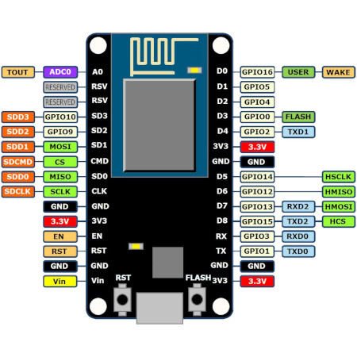
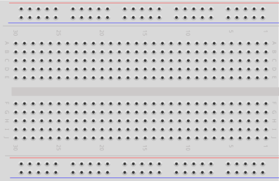
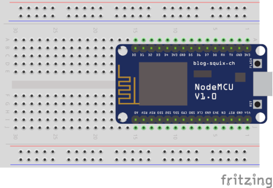
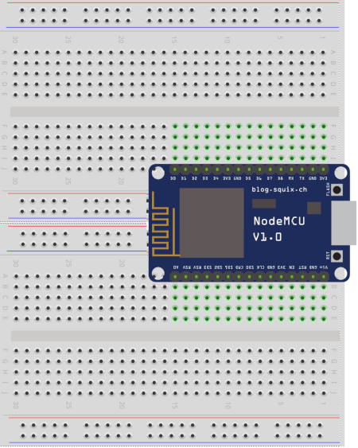
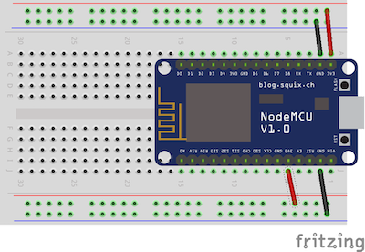
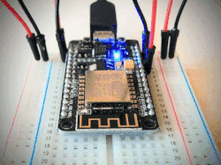

MicroPython and the Internet of Things, Part II: Hello, MicroPython!
Posted by
on underIn this chapter you are going to learn how to install and use MicroPython on your ESP8266 microcontroller board.
If you want to see me and hear me explain everything in this tutorial, I encourage you to purchase the video version from my Courses site. Not only it will make for a better learning experience, but you'll also be supporting my effort in keeping my blog updated with relevant content. Thank you!
For your reference, here is the complete list of chapters in this tutorial:
- Chapter 1: Welcome
- Chapter 2: Hello, MicroPython! (this article)
- Chapter 3: Building a MicroPython Application
- Chapter 4: Wi-Fi and the Cloud
- Chapter 5: Temperature and Humidity
- Chapter 6: Working with a Screen
The ESP8266 Microcontroller Board
To begin, I want to give you a very brief overview of the components in your ESP8266 microcontroller. Below you can see a diagram that should more or less match your board (though maybe not exactly, since this board is open source and there are a lot of different manufacturers):

The ESP8266 microcontroller chip is the bigger silver colored box. Above it you can see a zig-zag gold line. That is the Wi-Fi antenna. You can see 15 pins on each side, each with a label that should be printed on the board, with names such as D0, D1, 3V3, GND, etc. To make matters confusing, the diagram shows that all the pins have other labels shown on the outside, usually associated with their function.
There are three pins labeled 3V3 or 3.3V, which provide electric current. The name derives from the voltage, which is 3.3 volts. These pins can be used to deliver input current to other components that are part of your circuit. There are also four GND or "ground" pins. These provide a ground connection, which is required to close the circuit when you connect a component. Electric current always flows towards the ground, so when you connect a device to the microcontroller you will be making two actual connections. A connection from a 3.3V pin will deliver current to the component, and a connection from the component to a GND pin will close the circuit, effectively forcing the current to flow through the component. As you will learn later in this tutorial, all components have a clearly marked pin for input current typically called VCC, and one for connection to ground called GND.
The pins labeled with a D<n> are data pins. These are the pins that are used for communication between the microcontroller and other connected devices. This is going to be covered in later chapters of this tutorial.
The board has two small built-in LEDs (Light Emitting Diodes, or just tiny light bulbs if you prefer) that you can see in yellow in the diagram. The top LED is connected to the pin labeled D4 or GPIO2, while the bottom LED is connected to D0, which is also GPIO16. By the end of this chapter you will know how to turn the LEDs on and off with Python code!
Out of the remaining pins, the A0 is interesting to mention because it is the only "analog" pin in the board. All the other pins can have a binary value, either 0 or 1, but the analog pin can have a range of values, determined by the amount of electrical current passing through the pin. Note that this tutorial does not make use of the analog pin.
Another interesting pin is RST, which can be used to send a reset signal to the board. In future chapters you are going to learn how to use this pin to "wake" the microcontroller when it is in a deep sleep state.
The pin labeled Vin can be used to provide power to the board, as an alternative to the much more convenient micro-USB port. All the examples you are going to build in this tutorial are powered through the micro-USB port, so you are not going to use this pin.
The remaining pins are in most boards reserved for the microcontroller's own use, so there isn't a lot of interesting features to mention there. If you are curious about any use you can give them in your particular board, you should consult the documentation that is specific to it, as these pins are not always wired in the same way.
In the bottom center you have the micro-USB input connector. In this tutorial you will always power the board through this connector. If you connect the other end of the cable to your computer, then the board is going to appear as a serial device in your computer. This serial connection is going to be used to upload code into the microcontroller.
To complete this overview, note that the board has two small buttons labeled RST and FLASH, on the sides of the micro-USB port. The FLASH button prepares the board to be flashed with a new firmware, but this button is rarely needed, as current versions of the board can be put in flash mode through the serial connection. The RST button is, as I'm sure you can guess, a plain and simple reset button, and pressing it restarts the board.
The Breadboard
The first task that I'm going to show you how to do is to set up the microcontroller board on a breadboard. So first, let me tell you how breadboards work. Here is a diagram that should match the breadboard that you have:

The key to understand how to work with a breadboard is to visualize the internal connections between the holes. Once you know which holes are internally connected, you know that you can create a connection between two pins by inserting them in a pair of connected holes. It's really that simple.
Below I created a diagram that shows these internal connections between holes:

The top two and top bottom rows of holes are usually referred to as the "power strips", and they actually work in a similar way to a household power strip. For example, when you connect a pin that delivers current (such as any of the 3.3V pins in the ESP8266 board) into any of the holes in the top row, then all the remaining holes in that row can be used by other devices to draw power for themselves, so effectively this is equivalent to having a direct connection between each device and the power source. This top line is marked with a red line and in some breadboards with a "+" label, which indicates that as a convention, it should be used for current, as in my example. The second row of holes is marked in blue and with a "-" label. The convention is to use this line as a ground connection. There are two more positive and negative power strips at the bottom of the breadboard.
The connections used by the holes in the middle are more tricky to understand. Here the holes are grouped in fives. The ten rows of holes in the two middle sections are labeled with the letters a through j, but unlike the power strip rows, these rows are not connected. The connections for these pins are vertical, and cover just the group of five vertical holes in each section. The columns are labeled from 1 to 30, but in many breadboards you can only see a label every five columns. Using these labels, you can see that the a1, b1, c1, d1, and e1 holes are all connected with each other, so any pins that are plugged into these holes will be all connected. Similarly, pins f1, g1, h1, i1 and j1 are connected between them, but they do not share a connection with the top five holes.
If you think this is starting to make sense, you are ready to install the microcontroller into the breadboard. Depending on the physical dimensions of your microcontroller, there are two possible ways to do this.
Most likely you have a newer microcontroller board, which is the smaller kind. To find out for sure, place the breadboard on your desk with a red power strip on top and column 1 to the right, and then see if you can align your microcontroller in the middle section, with the micro-USB port facing right. Do not insert it into the breadboard yet. The top 15 pins from the microcontroller should be in the b row of your breadboard, columns 1 on the right to 15 on the left. The bottom strip of microcontroller pins should be aligned with the i row. The a and j rows should be free and visible from the top. Here is a diagram:

If you were able to align the pins as shown in the diagram, then gently press on the board until the pins are fully inserted into the holes. If your microcontroller is too large to fit in the way I described, then you have one of the bigger boards. These work in exactly the same way as the newer counterparts, but have slightly larger dimensions, which means that there is no way to fit them in the middle section of the breadboard while leaving at least a row on each side to make connections. The solution that I have used for these boards is to straddle them across two breadboards, as show in the diagram below:

With this set up, the top row of pins in the microcontroller board is in row j of the top breadboard, and each pin has four free holes to make connections. The bottom row of microcontroller pins fits in the a row of the bottom breadboard, also leaving four holes for connections to each pin.
In the diagrams that follow I'm going to assume you have the newer and smaller board installed on a single breadboard, since the older boards are mostly out of circulation by now.
Wiring the Breadboard Power Strips
The next task is to set up the delivery of power to the breadboard. I explained above that the top and bottom two rows of holes are used to deliver current and ground to other devices. While in this chapter there are no additional devices that need to make use of power, it is always a good idea to have the power properly distributed on the breadboard for when it is needed.
To do this you are going to need four jumper wires. If you have different kinds of wires, make sure the ones you select have all male pins. If you have wires of several colors available, you may want to use two red wires for the positive connections, and two black or blue wires for the ground.
The connections that you need to make are four:
- From one of the top
3V3pins (for example, thea1hole) to any hole in the breadboard's top row - From one of the top
GNDpins (for example, thea2hole) to any hole in the breadboard's second row from the top - From one of the bottom
3V3pins (for example, thej5hole) to any hole in the breadboard's second row from the bottom - From one of the bottom
GNDpins (for example, thej2hole) to any hole in the breadboard's bottom row
The end result should look more or less like the following diagram:

In case this isn't clear, no other component is drawing power from the microcontroller at this time, so these connections that supply power and ground to the breadboard aren't really doing anything yet, but it's nice to have the breadboard in a state that is ready to support additional components later on.
This is enough work in the physical world for this chapter. Now I'm going to take to the software side and show you how to prepare your computer so that you can install and run MicroPython on your board.
Setting Up Your Computer
If you have a Linux computer, then you do not need to install any device drivers for the microcontroller to be recognized. But if you have a Mac or a Windows machine, a driver is needed to allow the computer to recognize the microcontroller as a serial device. To download the driver installer package visit this page: https://www.silabs.com/products/development-tools/software/usb-to-uart-bridge-vcp-drivers.
The tools that you are going to use to communicate with the ESP8266 are written in Python, so what you need to do now (if you haven't yet) is install Python on your computer. I have tested this tools with Python 3.7, which is the current release of Python as I'm writing this. If your operating system does not provide a pre-packaged Python, you can go to https://python.org to download an official build for any of the supported operating systems.
Start by opening a terminal window. On Linux or Mac I will assume that you are running a bash, zsh or similar shell, while on Windows it will be the Command Prompt window. First create a new directory where you are going to store files associated with this tutorial:
$ mkdir micropython-tutorial
$ cd micropython-tutorial
In all the command that you are going to see in this tutorial I'm going to use the $ as an indication that you are in the command prompt. The $ is not part of the command.
The next step is to create a Python virtual environment. This is the recommended way to install packages, so that they are private to your project instead of installed system-wide. You can create a virtual environment with the following command:
$ python -m venv venv
This command is asking Python to run the venv package (the first venv) and create a virtual environment named venv (the second venv). If you want to use a different name for your virtual environment, replace the second venv with name you want to use. After the command completes, you should see a subdirectory with this name. Inside this subdirectory there is a private copy of the Python interpreter.
Note that if the command above does not work, it is possible that in your system the Python interpreter is called python3 and not python. In that case, the command should be:
$ python3 -m venv venv
Now you are going to activate this new virtual environment. The virtual environment activation configures the Python interpreter installed inside the virtual environment as the currently active Python that is invoked when you type python in the command line. This activation is temporary, by the way, nothing in your system is modified. The command to do the activation is different depending on the operating system. If you are using Linux or Mac, the command is:
$ source venv/bin/activate
(venv) $ _
If you are using Windows, the activation command is:
$ venv\Scripts\activate
(venv) $ _
See how as a response to running this command, the prompt is modified to indicate that venv is activated.
With the virtual environment activated, you are ready to install two packages that are going to help you manage your board. For this you are going to use the Python installer utility, called pip. This utility is already installed in the virtual environment:
(venv) $ pip install esptool rshell
At this point your computer should be ready, but I want to give you some additional information on virtual environments in case you are not familiar with them before I move on to the next task.
If you want to deactivate an activated virtual environment and return to the globally available Python interpreter, use the deactivate command:
(venv) $ deactivate
$ _
Something that confuses a lot of beginners is that virtual environment activations are local to each terminal session, so when you work with multiple terminals at the same time, you have to run the activation command in all of them. And if you close a terminal window while the virtual environment was activated, then the activation is lost and you will need to re-issue it when you open a new terminal. You will also need to repeat the activation of the virtual environment after you reboot your computer.
Just so that this is completely clear, let's assume you've done all the steps above to install esptool and rshell, then turned your computer off and on again and now want to resume working on this project. The virtual environment is still stored in your computer and it still contains the installed packages, but it is not activated, so when you run python you will be using the system-wide interpreter, and if you try to run esptool or rshell you are going to get errors since these are not installed globally. To go back to your virtual environment, you would need to open a terminal window and enter the following commands. For Linux and Mac:
$ cd micropython-tutorial
$ source venv/bin/activate
(venv) $ _
And if you are on Windows:
> cd micropython-tutorial
> venv\Scripts\activate
(venv) > _
And now you should be back in business!
Flashing MicroPython with esptool.py
At this point you have a brand new ESP8266 board nicely set up in a breadboard, in factory new condition. Now is time to install MicroPython on it!
Let's begin by downloading an official release of MicroPython from micropython.org. The downloads page has a section for ESP8266 builds, so find that section, and from there download the most recent build. At the time I'm writing this, the current version is 1.10, and the firmware file is called esp8266-20190125-v1.10.bin. By the time you do this you may find a newer release. Download this file using your web browser, and then to keep things organized you may want to move it from your downloads directory into the micropython-tutorial directory that you created above.
Next connect your USB cable. Plug the regular USB end into a free USB port on your computer, and the micro-USB end into your ESP8266 board. You will probably see one of the LEDs blink when the board powers on, but of course nothing else will happen because there is no software installed.
Before flashing a new firmware into the board it is a good idea to erase any previous data. This is something that you should always do so that the new firmware runs from a clean state. Here is the command that erases the entire memory of your board:
(venv) $ esptool.py erase_flash
This command is going to scan all the serial ports that are active in your computer to locate the one that is connected to the microcontroller board. If a serial port is found, then the command is going to proceed with the requested task and erase all the memory in the board. Below you can see an example output of this command:
(venv) $ esptool.py erase_flash
esptool.py v2.6
Found 2 serial ports
Serial port /dev/cu.SLAB_USBtoUART
Connecting........_
Detecting chip type... ESP8266
Chip is ESP8266EX
Features: WiFi
MAC: 84:0e:8d:8d:22:78
Uploading stub...
Running stub...
Stub running...
Erasing flash (this may take a while)...
Chip erase completed successfully in 2.0s
Hard resetting via RTS pin...
If you get a similar output to the above, then congratulations, your board is fully operational and you are going to have no trouble controlling it from your computer.
If the esptool.py command cannot find your board, then it will show an error message. If this is the case, then you need to check that you've followed my instructions correctly. In particular, make sure you have installed the serial port driver, and that your USB port and USB cable are working well. You need to make sure the above command works before you can continue.
On some Linux distributions you may get a "Permission Error" when you run the above command. This is because on Linux the serial port devices are only accessible to users that are in the dialout group. Some Linux distributions assign this group to the main user account automatically, but others do not. If you get permission errors, you can add yourself to the dialout group with the following statement:
(venv) $ usermod -a -G dialout <your-username>
Note that this change does not take effect immediately. You will need to log out and back in for the new group membership to be effective.
Now that the board is completely erased, you can flash the micropython build that you just downloaded. This is also done with the esptool.py command:
(venv) $ esptool.py write_flash 0 esp8266-20190125-v1.10.bin
This command is going to write the contents of the MicroPython .bin file to the board at address 0. This command should take about 30 seconds and at the end of it MicroPython should be installed in your board. If you want the flash operation to go faster, you can try to increase the transfer speed, which for me has always worked well. Use the following command to flash the firmware at fast speed:
(venv) $ esptool.py --baud 460800 write_flash 0 esp8266-20190125-v1.10.bin
If you use the fast speed transfer the firmware should flash in about 10 seconds.
Using the MicroPython REPL with rshell
Finally, the moment you were waiting for has come. You are now ready to start MicroPython on your ESP8266 board.
What I'm going to show you in this chapter is how to connect to the Python prompt running on your board. This is called the REPL, which is short for "Read-Eval-Print-Loop". This is the standard Python prompt that you are probably used to see when working with the regular Python interpreter, but this time it is going to be running on your board, and to interact with it you are going to use the serial connection to your computer. Ready?
Look in the output of any of the esptool.py commands that you issued earlier for a line that starts with Serial port. What follows in that line is the name of the serial port device that is attached to your microcontroller board. On a Linux or Mac computer this is going to be a name with the format /dev/<something>, while on Windows, it is going to be COM<number>. You can see above that for the board that I'm currently using the device name is /dev/cu.SLAB_USBtoUART.
To connect to your board and open a REPL session, enter the following command:
(venv) $ rshell --port <your board serial port name>
For example, on my system the command that I need to issue is:
(venv) $ rshell --port /dev/cu.SLAB_USBtoUART
This command will bring you into the rshell prompt. Here is an example of what you should see if everything is working well:
(venv) $ rshell --port /dev/cu.SLAB_USBtoUART
Using buffer-size of 32
Connecting to /dev/cu.SLAB_USBtoUART (buffer-size 32)...
Testing if ubinascii.unhexlify exists ... Y
Retrieving root directories ... /boot.py/
Setting time ... Mar 23, 2019 19:08:42
Evaluating board_name ... pyboard
Retrieving time epoch ... Jan 01, 2000
Welcome to rshell. Use Control-D (or the exit command) to exit rshell.
/Users/miguel/micropython-tutorial> _
If you are following this tutorial on Windows, note that rshell has a history of problems when running on Windows. When I tested the current version, which is 0.0.20, I found it would not start. To make it work I had to add one option to the rshell command, the -a option, which configures it to use ASCII data transfers instead of binary transfers. Here is the command for Windows:
(venv) $ rshell -a --port COM3
From this prompt you can perform management tasks related to your microcontroller board, and also start a Python REPL that you can use to interact with the board in real time. Let's go ahead and do just that, by entering the repl command:
/Users/miguel/micropython-tutorial> repl
Entering REPL. Use Control-X to exit.
>
MicroPython v1.10-8-g8b7039d7d on 2019-01-26; ESP module with ESP8266
Type "help()" for more information.
>>>
>>> _
And now you are finally seeing MicroPython in all its glory!
In case you are wondering, your computer is playing a very minor role now. It is displaying the output of MicroPython running in the board to your terminal, and reading keystrokes that you press on your keyboard and transmitting them to the board so that MicroPython can evaluate them there. Even though this prompt looks suspiciously similar to the regular Python one, this is all running in the board and your computer is acting as a dumb terminal.
To make sure everything is working, type a simple Python sentence:
>>> print('Hello, MicroPython!')
Hello, MicroPython!
>>> _
Playing with the On-Board LEDs
But of course now that you have a MicroPython prompt running, I have to give you something to play with that is more interesting than printing simple text strings to the console. As a nice and gentle introduction to working with a hardware device, I'm going to show you how to operate the on-board LEDs.
As I mentioned earlier, this board has two LEDs. To be more accurate, this is almost always the case, but some of the older ESP8266 development boards come with only one LED. Let's first try to control the most common one, the one that all boards have:
>>> import machine
>>> led = machine.Pin(2, machine.Pin.OUT)
The machine import is one of the built-in packages that allow Python code to interface with the board. One of the most important feature of this package is the Pin() class, which is used to read or write to the data pins.
If you recall from earlier, I mentioned that the LED that is located next to the Wi-Fi antenna is attached to the D4 pin. So why am I initializing the pin with a 2? This is because naming of pins in microcontrollers is usually very confusing. The names of the pins that are printed on the board are really not that useful, what really matters in terms of addressing a pin is its GPIO number. GPIO stands for General Purpose Input/Output, and is the name that is giving to the set of pins that are available to be used by applications. If you go back to the pin diagram at the top of this article, you will notice that D4 is also GPIO2, so I'm using 2 as the pin number.
The Pin() class constructor takes a second argument, which is a constant that declares this pin as an output pin. That means that the pin will be configured to be written to. Obviously pins can also be configured for input, and you will learn about that later in the tutorial.
Continuing with the theme of confusing things, the LED is wired to the pin in reverse, so when the pin is set to 0 the LED turns on, and when the pin is set to 1 the LED turns off. When you initialize pin 2 as output using the above Python statement, you are probably going to see the LED in the board turn on immediately, because by default the state of this pin is likely 0.
If you want to turn off the LED, you can write a 1 to the pin:
>>> led.value(1)
Or if you prefer a shorter form:
>>> led.on()
To turn the LED back on, use one of the following commands:
>>> led.value(0)
>>> led.off()
Remember that the LED is wired in reverse, so on() turns it off, and off() turns it on!
Do you want to see if you've got a second LED in your board? The second LED is on pin D0, also known as GPIO16. If it exists, it is also wired in reverse. Let's create a led2 pin for it:
>>> led2 = machine.Pin(16, machine.Pin.OUT)
>>> led2.off()
If your board has a second LED, the above code should turn it on. This second LED, when present, is located near the RST button.
The MicroPython interpreter supports control structures in the same way as standard Python does. With a little bit of creativity, you can create a little light show using a while loop, the two LEDs and the time.sleep() function:
>>> import time
>>> while True:
... led.off()
... led2.on()
... time.sleep(0.5)
... led.on()
... led2.off()
... time.sleep(0.5)
...
After you type the last time.sleep(0.5) and press Enter, the cursor will move to the next line at the same level of indentation, assuming you will enter more statements inside the while-loop. To tell the REPL that you are done with this loop, you have to press the delete or backspace key to unindent the cursor. Then press Enter on the empty line to tell the REPL that the statement is complete.
If you are not familiar with the time.sleep() function, this is one that exists also in the regular Python interpreter, and is used to pause the execution of the script for the request number of seconds. The 0.5 that I'm passing as an argument means half a second.
If your board has the two LEDs, you should see them blink in alternate fashion. On boards with only one LED you will just see the one LED blink on an off.

When you are done admiring the light show, you can press Ctrl-C to break out of the while-loop and stop it. Then you can press Ctrl-X to exit the REPL and go back to the rshell prompt. Finally you can press Ctrl-D to exit rshell and return to your terminal prompt.
As you probably noticed, the while-loop that you typed in the REPL is gone the moment you interrupt the script by pressing Ctrl-C. If you wanted to restart the lights, you would need to type the code all over again, or maybe use the up arrow to recall previous lines that you have entered one by one and in the right order. Either way, this type of coding on-the-fly is great when you are trying things out, but it is not a good workflow when you are writing an application. In the next chapter I'm going to show you how to create a proper MicroPython application, and how to install it on your board so that it runs automatically when the board is connected to power.
Become a Patron!
Hello, and thank you for visiting my blog! If you enjoyed this article, please consider supporting my work on this blog on Patreon!

-
#1 craig said
hell Miguel, I bought your book on kindle (and purchased all the hardware and successfully did initial setup).
I am using Mac OS : Mojave : v10.14.5 and python 3.6.
I was able to successfully run: erase_flash and the write flash (esptool.py write_flash 0 esp8266-20190125-v1.10.bin).However when I run the rshell command (rshell --port /dev/cu.SLAB_USBtoUART) I get this response :
"""
Using buffer-size of 32
Connecting to /dev/cu.SLAB_USBtoUART (23.195.69.106) ...
No response from 23.195.69.106
Welcome to rshell. Use Control-D (or the exit command) to exit rshell.No MicroPython boards connected - use the connect command to add one
"""I'm unable to find any resolution via numerous web searches... any idea of how to get a connection to the ESP8266?
Regards,
Craig -
#2 Miguel Grinberg said
@craig: did you copy the correct device name for your board? The command that you are showing uses the /dev/cu.SLAB_USBtoUART device that corresponds to my device, I suspect this is different for your case. You need to look at the output of esptool.py to find out what the device name for you.
-
#3 craig said
Hello Miguel, thanks for the prompt response (and my apologies for not getting back sooner).
Actually here is my output from the esptool.py and .bin command (so apparently our device names match by coincidence...)
Any recommendations?
<hr />$ esptool.py write_flash 0 esp8266-20190125-v1.10.bin
esptool.py v2.6
Found 4 serial ports
Serial port /dev/cu.SLAB_USBtoUART
Connecting........_
Detecting chip type... ESP8266
Chip is ESP8266EX
Features: WiFi
MAC: .............
Uploading stub...
Running stub...
Stub running...
Configuring flash size...
Auto-detected Flash size: 4MB
Flash params set to 0x0040
Compressed 615388 bytes to 399928...
Wrote 615388 bytes (399928 compressed) at 0x00000000 in 35.3 seconds (effective 139.4 kbit/s)...
Hash of data verified. -
#4 Miguel Grinberg said
@craig: what version of rshell are you using? The output that you are getting is odd, in particular this line:
Connecting to /dev/cu.SLAB_USBtoUART (23.195.69.106) ...
in my case I get this instead:
Connecting to /dev/cu.SLAB_USBtoUART (buffer-size 32)...
I looked at the source code of rshell, and based on that it seems that in your computer the name "/dev/cu.SLAB_USBtoUART" is registered as a host with IP address 23.195.69.106, so rshell tries to connect to the board via network. On my computer trying to obtain the IP address of this port fails, so then rshell decides to treat the name as a serial port device.
So the question is why your system thinks this port is a hostname. Have you done any non-standard networking configuration on your Mac? Maybe add custom entries to the hosts file?
-
#5 Tolia said
Thanks for another great tutorial series Miguel. Are you planning to cover MQTT also in your series for M2M communication?
-
#6 Miguel Grinberg said
@Tolia: No, for this series I will be using HTTP only.
-
#7 Matt B said
Miguel,
i can erase everything on the ESP8266 and write the bin file to the ESP8266 but when I try to shell i get the following error:$ rshell --port /dev/cu.SLAB_USBtoUART
Using buffer-size of 32
Connecting to /dev/cu.SLAB_USBtoUART (198.105.244.117) ...
No response from 198.105.244.117
Welcome to rshell. Use Control-D (or the exit command) to exit rshell.No MicroPython boards connected - use the connect command to add one
My serial port is listed as Serial port /dev/cu.SLAB_USBtoUART
Any help is much appreciated,
Matt B.
-
#8 Miguel Grinberg said
@Matt: see comment #3 and #4 above, which are about a similar problem. I'm not sure why in your system /dev/cu.SLAB_USBtoUART appears to be associated with an IP address, so rshell is confused and treats it as a network device. Please double check that your device name is actually /dev/cu.SLAB_USBtoUART.
-
#9 Matt said
Miguel, I did see those comments and experiencing the same issues. i refreshed it and still get the same device name..
$ esptool.py write_flash 0 esp8266-20190125-v1.10.bin
esptool.py v2.7
Found 2 serial ports
Serial port /dev/cu.SLAB_USBtoUART
Connecting........_
Detecting chip type... ESP8266
Chip is ESP8266EX
Features: WiFi
Crystal is 26MHz
MAC: cc:50:e3:70:e3:8e
Uploading stub...
Running stub...
Stub running...
Configuring flash size...
Auto-detected Flash size: 4MB
Flash params set to 0x0040
Compressed 615388 bytes to 399928...
Wrote 615388 bytes (399928 compressed) at 0x00000000 in 35.4 seconds (effective 139.1 kbit/s)...
Hash of data verified.Leaving...
Hard resetting via RTS pin...It doesn't appear to be a connection issue since I can erase and flash to it no problem. I'm running Mac OS Mojave 10.14.5.
Any help is much appreciated - very excited to work through your MicroPython series.
-
#10 Matt Baxter said
Miguel,
I'm still having issues with rshell, but I can definitely connect to the ESP8266. I can erase it, flash it and I can use '$ screen <board name> 1152000' to access the board. I can do print statements and worked through your LED tutorial. However, I don't have access to any of the rshell commands ('ls', 'cat', etc.). So i think it's an issue with the rshell command. Again I'm working with MAC OS Mojave - not sure if you've heard of this before or know of any workarounds with rshell?
Matt B.
-
#11 Miguel Grinberg said
@Matt: This is not a problem with the microcontroller. Based on reading the rshell source code, as I commented above, rshell things your device has an IP address attached to it. What is the significance of the IP address 198.105.244.117? That's what your system appears to be reporting when rshell asks if /dev/cu.SLAB_USBtoUART is a known hostname. For example, what happens if you enter this command on your terminal:
ping /dev/cu.SLAB_USBtoUART
Does it give you a "unknown host" error, or do you get something different?
-
#12 Matt Baxter said
Miguel,
I figured out the problem - i need to have wifi turned off on my Mac. Once I turned wifi off everything worked seamlessly. Now I can utilize rshell and repl as you have described. When I turn wifi back on rshell stops working. So as long as I'm connected through USB and I keep wifi off I'm good to go.
Matt
-
#13 Miguel Grinberg said
@Matt: It's really weird! Probably a rshell issue.
-
#14 Paul G said
Hi guys,
I had a similar experience myself. In my case the IP address was 94.242.132.16. That IP is assigned to Barefruit Ltd. Their website claims;
The Barefruit Solution
Generating highly targeted traffic by replacing DNS and HTTP errors with relevant advertising
This page gives more details: https://manurevah.com/blah/en/blog/DNS-Hijacking-via-Barefruit-Talktalk-and-Others
In your case the IP is assigned to Akamai. They appear to offer the same sort of services.
I sidestepped the problem by modifying rshell to add a means of forcing serial mode. Another approach might be to change the DNS settings in your router to use a different DNS resolver such as Google DNS.
I hope this helps. -
#15 George K said
for those still having problems with rshell, until it is resolved you can use screen (mac/linux), a general console tool.
runls /devbefore and after plugging in your device to identify it, then runscreen /dev/<your_device_name> 115200to access the device console - on archlinux you'll probably need to run this withsudo
If the console screen is blank, pressCtl-C Ctl-Dto interrupt/reset the device - this should get the micropython repl up and running:MPY: soft reboot
MicroPython v1.11-8-g4.............; ESP module with ESP8266
Type "help()" for more information. _hope this helps ; )
-
#16 Tomek Karwowski said
Hi everyone,
when trying to erase_flash I get a following error:esptool.py v2.8
Found 0 serial portsA fatal error occurred: Could not connect to an Espressif device on any of the 0 available serial ports.
I have Acer Aspire V with Linux 4.15.0-72-generic, #81-Ubuntu x86_64, GNU/Linux. I get the same issue on different laptop with same OS. I was unable to find similar issue online (which is really weird).
It seems as if VCP drivers are not installed, but they were supposed to be included in the kernel.Anyone has any clue?
-
#17 Miguel Grinberg said
@Tomek: yes, Linux comes with this driver included, at least that's what I thought. But you can download this driver as a standalone driver if you want to try installing it: https://www.silabs.com/products/development-tools/software/usb-to-uart-bridge-vcp-drivers.
-
#18 Byron Clay Nelson said
Found an answer for the wifi issue, it was posted by dhylands on micropython.org forum. He posted:
I think rshell is getting confused. When it starts up it tries to resolve the "port" by calling gethostbyname and when that falls it tries to connect via serial.It looks like gethostbyname is succeeding. This is why it's printing the ip address:
Connecting to /dev/cu.SLAB_USBtoUART (198.105.244.117) ...
No response from 198.105.244.117Try starting rshell without using --port and after you get the "No MicroPython boards connected" error try entering this command:
connect serial /dev/cu.SLAB_USBtoUART
-
#19 Alexandre said
Hi, Miguel. I bought your book and I have the same issue with REPL and I have the same issue with REPL. I try to apply all the above solutions but this don't work. I use python 3.9 venv and I follow correctly all the steps suggest for you. But this don't work. I very frustrated with this.
When I send the command "sudo rshell --port /dev/cu.usbserial-0001" or "connect serial dev/cu.usbserial-0001", i get a message similar to "Try to connect to REPL" and nothing more happens.
I use macOS Catalina -
#20 Miguel Grinberg said
@Alexandre: you refer to a "same issue", but you are not really giving much information, and I don't have the context to know what is this issue. Can you please start from the beginning and describe your issue properly so that I have a full understanding? For example, you've made no reference to flashing the device. Does that work? Can you show the output of the esptool command? Can you also show the output of the rshell command that fails?
-
#21 Deeraj Malladi said
Hi Miguel,
Your explanations are clear and concise, however, I am facing with a issue when connecting to the device's(ESP8266) python interpreter from my laptop.
commands and their responses
esptool.py write_flash 0 esp8266**.bin, outputesptool.py v3.0
Found 1 serial ports
Serial port COM3
Connecting....
Detecting chip type... ESP8266
Chip is ESP8266EX
Features: WiFi
Crystal is 26MHz
MAC: f4:cf:a2:ed:8d:4a
Uploading stub...
Running stub...
Stub running...
Configuring flash size...
Compressed 615388 bytes to 399928...
Wrote 615388 bytes (399928 compressed) at 0x00000000 in 46.1 seconds (effective 106.7 kbit/s)...
Hash of data verified.Leaving...
<hr />
Hard resetting via RTS pin...rshell -a --port COM3, output
<hr />
Using buffer-size of 32
Connecting to COM3 (buffer-size 32)...
Trying to connect to REPLrshell --version, output
0.0.28
Shell shows that it is trying to connect to the REPL, but there is nothing happening, I have to kill it after sometime.
I checked it on Ubuntu and Windows 10 OS, same responses, and also checked with two other different ESP8266 boards again same response. Can you please help me out to resolve this issue.
Thank You
Deeraj Malladi -
#22 Miguel Grinberg said
@Deeraj: I do not know what the problem might be. Your connection with the board appears to work, since esptools is able to flash. Assuming you are flashing a valid (i.e. not corrupted) image of micropython, rshell should be able to connect to the board. You may want to write an issue on the rshell repository to see if someone can suggest how to debug this issue.
-
#23 Deeraj Malladi said
Miguel,
Thank you for taking out your time to review my post and answering it.
I looked at the micropython official documentation and got resolved it by following the below steps,
Machine details
Raspberry Pi4
OS: UbuntuSteps
1. Re-flashed the firmware using below command,
esptool.py --port /dev/ttyUSB0 erase_flash
2. Re-deployed the firmware using below command,
esptool.py --port /dev/ttyUSB0 --baud 460800 write_flash --flash_size=detect 0 esp8266-20170108-v1.8.7.bin
3. Used below command to connect to the remote shell,
picocom /dev/ttyUSB0 -b115200Everything started working, and I am able to continue the project. The interesting thing is, later rshell is also working and I am able to do my work smoothly. However, sometimes I still face this problem with the rshell, whenever I face this problem I am switching to "picocom" to continue my work.
Once again Thank You, and I am looking forward to see more stuff like this from you.
Thank You
Deeraj Malladi -
#24 Paul Trayers said
I also got no response from rshell and the blinking blue LED of death after flashing the firmware. Once I included the --flash_size=detect mentioned in Step 2 above it all worked.
-
#25 Adam L said
Thank you Deeraj Malladi --flash_size=detect solved my blinking blue led of death! Thank you!